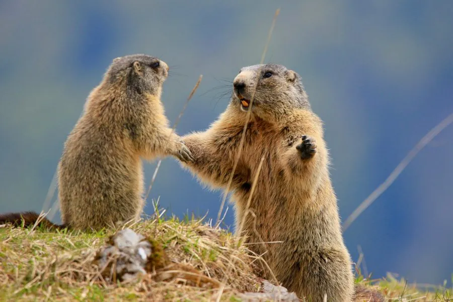

哺乳动物 · 动物界
旱獭 Marmota marmota

欧洲阿尔卑斯山的大型松鼠科动物，毛色黄褐、体型肥壮，用家族群体挖掘的洞穴越冬，冬眠期长达半年。
- 分类
- 门脊索动物门纲哺乳纲目啮齿目科松鼠科属旱獭属
- 栖息环境
- 欧洲高山草甸、林缘与岩石坡地
- 地理分布
- 阿尔卑斯山、喀尔巴阡山、比利牛斯山等欧洲山地
- 保护级别
- IUCN 无危（LC）；非中国分布物种
物种志
旱獭体长 42–54 厘米，尾长 13–16 厘米，体重 3.5–6 千克，冬前可更重。它身体肥壮，头部宽圆，毛色为黄褐至灰褐色，背部颜色较深，腹部浅黄；四肢短而有力，前爪适合挖掘。
旱獭分布于欧洲阿尔卑斯山、喀尔巴阡山和比利牛斯山的高山草甸，栖息在海拔 800–3200 米的林缘和高山草地。它以草、花、种子和根为食，结成家族群生活在复杂的洞穴系统中，白天在岩石上晒太阳。冬季旱獭进入深冬眠，体温和心率大幅下降，靠体内脂肪度过长达 6–7 个月。雌性妊娠期约 33 天，每胎 3–5 仔，寿命约 10–15 年。目前旱獭被列为无危。
形态与习性
- 食性草、花、种子与根
- 体长42–54 cm
- 体重3.5–6 kg
- 寿命约 10–15 年
- 繁殖妊娠约 33 天，每胎 3–5 仔
- 冬眠每年长达 6–7 个月
趣味知识
- 旱獭冬眠长达半年以上，靠体内脂肪维持生命。
- 它们用家族群体合作挖掘复杂的地下洞穴。
- 旱獭常在岩石上晒太阳，发现危险会发出尖叫声。
生态关系
- 捕食 ← 金雕 金雕捕食旱獭